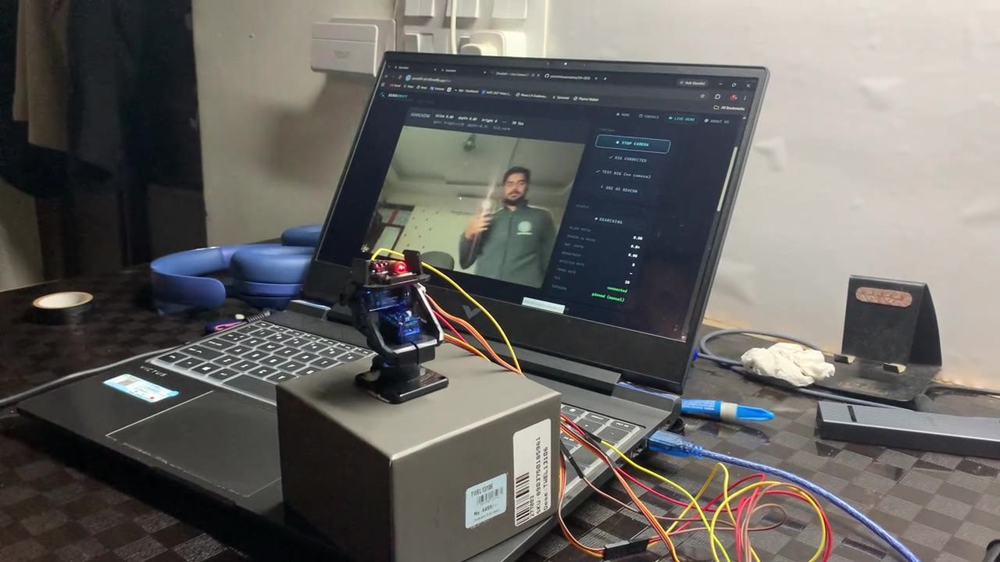

MK1Not available in this browser.
CURRENT · WORKING PROTOTYPE
MK1 · Servo tracker
The hardware we demonstrate. It locks on a real 4 Hz beacon and steers a laser with two servos, driven by our software through a laptop webcam.
2× SG90 servos
KY-008 laser
Laptop webcam